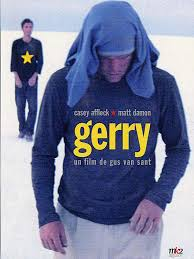
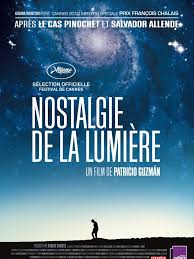
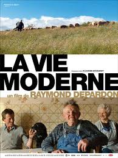

Construire des histoires avec différentes méthodes et médias
|  | GerryDeux hommes, nommés tous deux Gerry, traversent en voiture le désert californien vers une destination qui n'est connue que d'eux seuls. Persuadés d'atteindre bientôt leur but, les deux amis décident de terminer leur périple à pied.Mais Gerry et Gerry ne trouvent pas ce qu'ils sont venus chercher ; ils ne sont même plus capables de retrouver l'emplacement de leur voiture. C'est donc sans eau et sans nourriture qu'ils vont s'enfoncer plus profondément encore dans la brûlante Vallée de la Mort. Leur amitié sera mise à rude épreuve. |
|  | La nostalgie de la lumièreAu Chili, à trois mille mètres d'altitude, les astronomes venus du monde entier se rassemblent dans le désert d'Atacama pour observer les étoiles. Car la transparence du ciel est telle qu'elle permet de regarder jusqu'aux confins de l'univers. C'est aussi un lieu où la sécheresse du sol conserve intacts les restes humains : ceux des momies, des explorateurs et des mineurs. Mais aussi, les ossements des prisonniers politiques de la dictature. Tandis que les astronomes scrutent les galaxies les plus éloignées en quête d'une probable vie extraterrestre, au pied des observatoires, des femmes remuent les pierres, à la recherche de leurs parents disparu … |
|  | La vie ModerneRaymond Depardon a suivi pendant dix ans des paysans de moyenne montagne. Il nous fait entrer dans leurs fermes avec un naturel extraordinaire. Ce film nous parle, avec une grande sérénité, de nos racines et du devenir des gens de la terre. |
This page has been coded during the FullStack program @LeWagon. That was probably the best nightmare of my entire life.